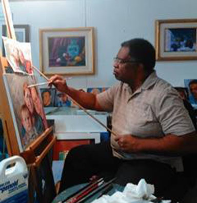

"The simple act of sketching stimulates creative thought" -Dennis Lewis
Dennis Lewis started painting at the age of seven. He was inspired to paint after his mother complemented a drawing he had made for her. Dennis works mostly in oils, creating still-life portraits of people and any objects the pleases him. aside from being an artist he also helped create some of the first video games such as The Island of Dr. Brain. in recent years Dennis had the urge to paint 100 portraits, some of which are in the slideshow below. unfortunately Dennis was diagnosed with cancer, he still paints though. Cancer won't keep him from his dreams. Dennis likes to paint stories into his art, he lets the viewer finish the story he has presented
Since 1971, so for about 46 years.
My mother inspired me to become an artist.
Painting of egyptian god called “Queen”.
Thomas Blackshear's painting “The Witness”.
Be determined and passionate for your dream. Hold on to it, do it to do it.
Work for some job, earn money, buy required tool or spend for dream. If you need it for your dream. DO IT.
You can always learn from everybody.
Sketch your ideas/visualize your idea.
The simple act of sketching stimulates creative thought.
Art has many forms it takes time, start small. Do things in short bursts of creativity.
Practice and practice no matter the composition or quality.